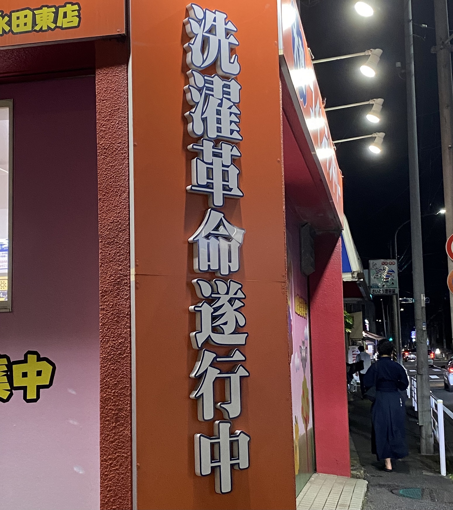

第2回
10/5話し合いまとめ
第一希望 衣
第二希望 食
インタビューや観察は学内で行う
第２回 課題
①まるでテーマパークのような看板のパチンコ店
最寄り駅の知覚にあるパチンコ店の上部に設置された看板。一切「パチンコ」と書かれていないのが特徴。
中学生のころ、室内テーマパークでもできたのかと喜んだら、パチンコ店だったのでショックを受けた記憶がある。
撮影日：10月11日
②真ん中だけ光っている標識
パチンコ店の写真を夜に撮りに行った際、近くの道で偶然見つけた標識。人や車通りが多い裏道から、大通りに出るところに設置されているもの。
「止まれ」ではなく「左折」の標識が光っているのが変だなと思い撮影した。（補足：この道は５本の道が集まった交差点「五差路」である。）
撮影日：10月11日
③不思議な表示物
コインランドリーお店の外壁に表示されているもの。店名の看板よりも派手に表示されている。
店名でないものがこれほど大きく表示されているのが珍しく思い撮影した。

撮影日：10月11日